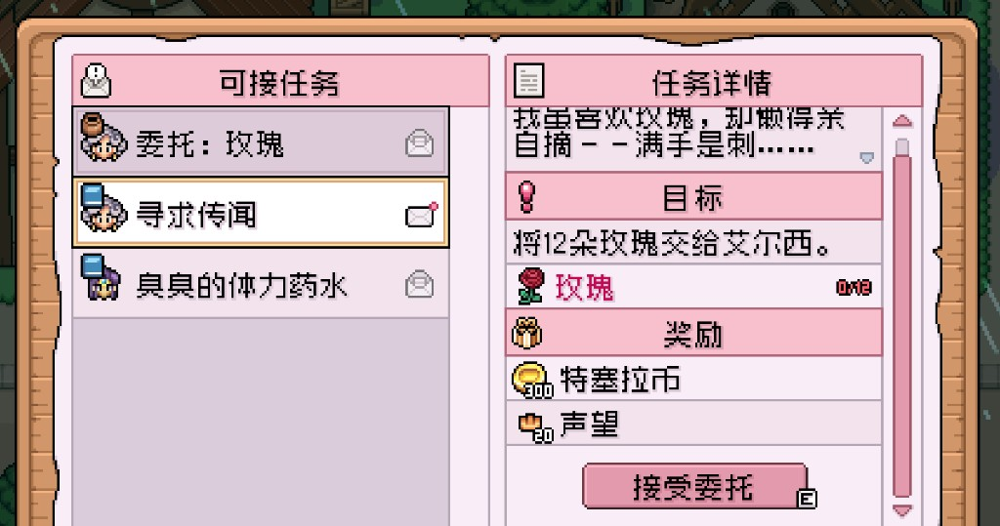

Quick answers
- Dead spring crops will not revive—scythe and replant.
- Protect gold for summer seeds late spring.
- Manor garden roses appear in summer.
- Beach and festivals after the patch is alive.
- Same watering rule as spring.
Season flip ops
- Clear brown spring plants
- Shop summer seeds (not on a wasted closed day)
- Plant a finishable patch
- Then roses / beach / mines
Roses note
East manor garden bushes by the gazebo. Useful for Elsie’s rose requests. Do not confuse with planted flower beds.
Safe to skip
- Giant summer field day one
- Spending the last seed coin at a stall
Screenshots from our save
Real Fields of Mistria shots from our first-season play. Captions in English; in-game UI language may differ.



FAQ
Still spring on my file?
Wait for the flip—roses will not spawn early.
Spring buffer gone?
Fish/forage emergency cash; shrink the patch.
Unofficial fan guide. Not affiliated with NPC Studio. Verify details in your game version.